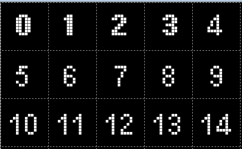
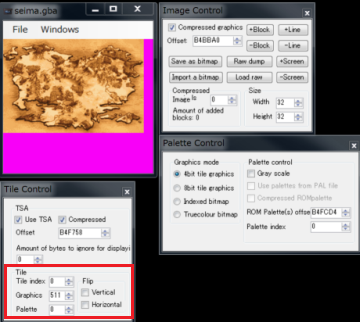

GBAでは、大きな画像を8*8のタイルに分けて管理します。
そのタイルをどうやって表示するか決めるのがTSAデータです。
小さい画像ではTSA不要のものが多いですが、CGなどの大きな画像を操作しようとするとTSAの問題にぶつかります。
TSAを活用すると、8*8のタイルごとにパレットを切替たりして16色以上の絵が出せたりしますが、使いこなすのがとてつもなく難しいです。

1つのタイルは8*8ピクセルからなります。
タイル番号は左上を0番としてスタートします。
1つのデータはu16のデータです。(リトルエンディアン)
C言語で表現するとこのようなデータ構造です。
uint max = (width / 8) * (height / 8);
for(uint i = 0 ; i < max ; i ++ )
{
u16 tileNumber = data[i] & 0x03FF; //タイル番号
bool isHorizontalFlip = data[i] & 0x0400; //横反転するか
bool isVerticalFlip = data[i] & 0x0800; //縦反転するか
u8 pallet = (data[i] >> 12) & 0xf; //利用するパレット0-15個
}
ビット列に対して、このようになります。
FE DC BA 98 76 54 32 10
11 11 11 11 11 11 11 11
|------------|
3 F F ---> タイルナンバー 0 ～ 1023
|-> 横(Horizontal )反転するかどうか？ 0=しない 1=する
|--> 縦(Vertical )反転するかどうか？ 0=しない 1=する
|---| ---> パレット 0-15
こちらに詳しい解説があります。
gbatek LCD VRAM BG Screen Data Format (BG Map)
http://problemkaputt.de/gbatek.htm#lcdvrambgscreendataformatbgmap
[FE7] World Map! + TSA Tips
http://feuniverse.us/t/fe7-world-map-tsa-tips/165
GBA Graphics Editor で生成できます。
GBA Graphics Editorを立ち上げて、romを読み込み、
Window→Control を表示してください。
Use TSA にチェックを入れます。
TSAのアドレスを入れます。
もし、TSAが圧縮されているならば、「Compressed」をチェックします。
これでTSAを利用した画像が見れます。
TSAを変更した場合、Tileの項目で変更できます。
注意!
この内容は変更したら即反映されます。
圧縮TSAの場合、サイズが可変長になるので、後ろのデータを壊すことがあります。
必ずバックアップをとってください。

いちいち変更しなくてはいけないのは変動なので、
キーボード操作自動化ソフトとかを使ってマクロを作るといいです。
OPデモのワールドマップは、HiMacroExで以下のように定義して、一気に作成させました。
W WindowsForms10.Window.8.app.0.33c0d9d,Tile Control LCtrl Down A C LCtrl Up LShift Down Tab LShift Up LCtrl Down A V LCtrl Up Tab Tab LCtrl Down A LCtrl Up 0 LShift Down Tab LShift Up ↑
圧縮解凍はlz77ですので、Nintenlords Compressorなどを使ってください。
背景用に240×160の16色を表示する無圧縮TSAが、ROM内に 0xAA7330 として定義されています。
このTSAで動くものについては、何もせずにこれを指定するだけで利用できます。
{kind=link}
{kind=link}
{kind=link}
{kind=link}